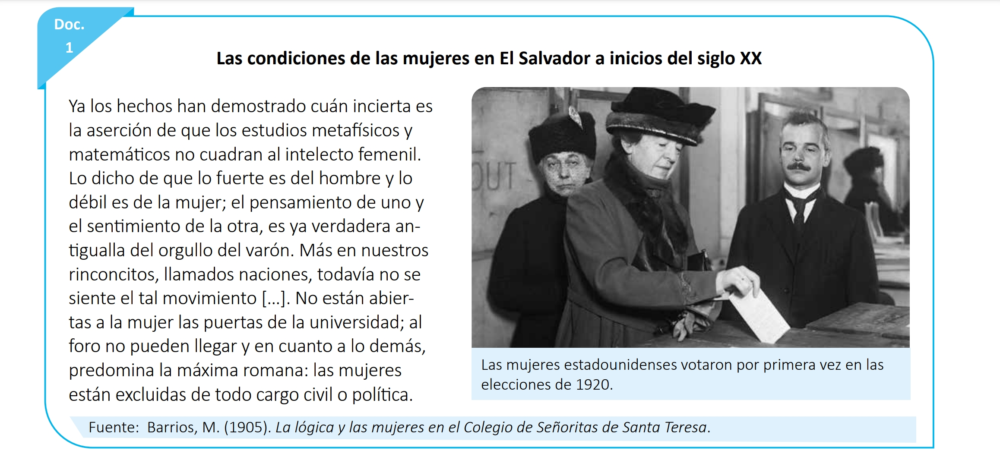
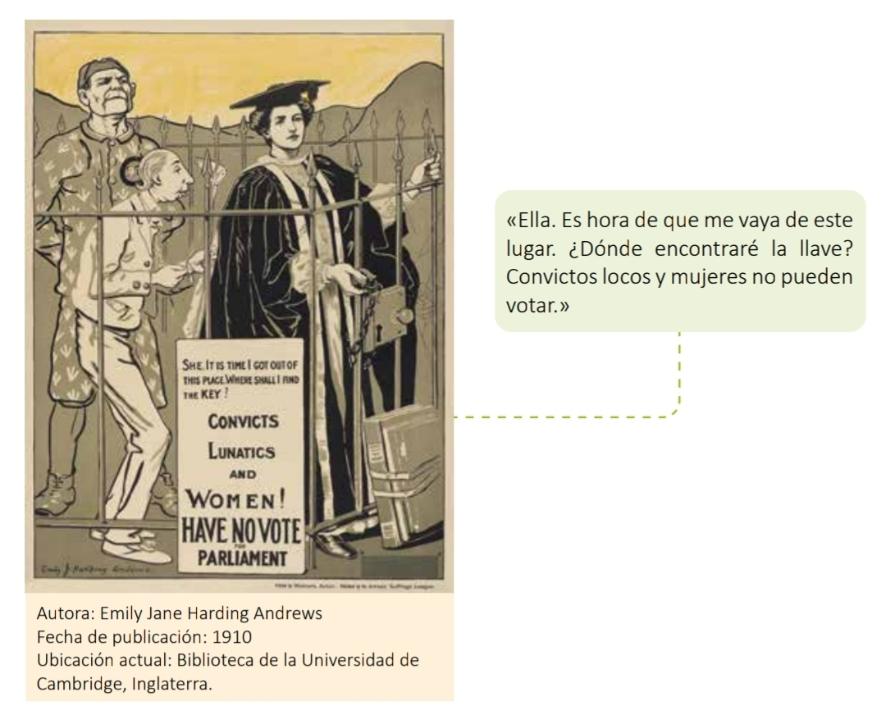

<!DOCTYPE html>
<html translate="no" lang="es">
<head>
  <meta charset="UTF-8">
  <meta name="viewport" content="width=device-width, initial-scale=1.0, maximum-scale=1.0, user-scalable=no">
  <meta name="google" content="notranslate">
  <meta http-equiv="Content-Language" content="es">
  <title>3-6 La lucha por los derechos civiles y políticos de las mujeres en los siglos XIX y XX.pdf - Octavo</title>
  <link rel="stylesheet" href="civica-core.css">
  <link rel="icon" href="favicon.png" type="image/png">
</head>
<body>
  <div id="app"></div>
  <script src="jspdf.umd.min.js"></script>
  <script src="students.js"></script>
  <script src="rigo.js"></script>
  <script src="civica-core.js"></script>
  <script src="civica-exercises.js"></script>
  <script src="civica-games.js"></script>
  <rigo-mascot></rigo-mascot>
  <script>
    CIVICA.init({
      id: 'cv_1783644284038',
      container: '#app',
      topic: '3-6 La lucha por los derechos civiles y políticos de las mujeres en los siglos XIX y XX.pdf',
      level: 'Octavo',
      unit: 'unidad 3 - Semana 6',
      subjectLabel: 'Ciudadanía y Valores',
      book: { url: 'https://drive.google.com/file/d/1MpK9rRP6dMntOsctL0Vbh9rlMzIS0MqB/view?usp=drivesdk', label: 'Abrir Libro' },
      pdfDesign: 'HollyHobbie',
      colors: { primary: '#D4AF37', accent: '#9B59B6', bg: '#87CEEB', cardBg: '#FFFFFF', text: '#1A1A1A' },
            examPools: {
              '20176655': 'A',
              '20176656': 'B',
              '20176657': 'A',
              '20176661': 'B',
              '20138869': 'A',
              '20176662': 'B',
              '20176663': 'A',
              '10065035': 'B',
              '20176664': 'A',
              '20305579': 'B',
              '20305581': 'A',
              '20176667': 'B',
              '20176668': 'A',
              '20179890': 'B',
              '20179891': 'A',
              '20293665': 'B',
              '20305583': 'A'
            },

      sections: {
        explore: [
          {
            type: 'note',
            title: 'La lucha por los derechos de las mujeres',
            html: `<p>Durante los siglos XIX y XX, las mujeres alrededor del mundo lucharon para obtener derechos <strong>civiles</strong> (libertades básicas como la igualdad ante la ley) y <strong>políticos</strong> (como el derecho al voto). En muchos países, incluido El Salvador, las mujeres no podían votar, estudiar en la universidad ni ocupar cargos públicos. Observa la imagen y lee el testimonio de 1905 para entender cómo era esta situación a inicios del siglo XX.</p>
                   
                   <p style="font-size:0.85em;margin-top:6px;"><em>Las mujeres estadounidenses votaron por primera vez en las elecciones de 1920.</em></p>
                   <p style="margin-top:10px;"><strong>Fuente:</strong> Barrios, M. (1905). <em>La lógica y las mujeres en el Colegio de Señoritas de Santa Teresa</em>: "No están abiertas a la mujer las puertas de la universidad; al foro no pueden llegar y en cuanto a lo demás, predomina la máxima romana: las mujeres están excluidas de todo cargo civil o política."</p>`
          },
          {
            type: 'cv_textanswer',
            title: 'Analiza el Documento 1',
            instruction: 'Lee el texto de Barrios (1905) y responde con tus propias palabras.',
            dataA: [
              { q: '¿A qué dificultades consideras que se enfrentaron las mujeres para alcanzar los derechos políticos y civiles?', minLength: 40, rows: 3, placeholder: 'Escribe tu respuesta aquí...' },
              { q: '¿Por qué es importante la promoción de los derechos civiles y políticos?', minLength: 40, rows: 3, placeholder: 'Escribe tu respuesta aquí...' },
              { q: '¿Cuál era la situación de las mujeres en El Salvador a principios del siglo XX?', minLength: 40, rows: 3, placeholder: 'Escribe tu respuesta aquí...' },
              { q: '¿Qué similitudes y diferencias encuentras entre la situación de El Salvador y la de Estados Unidos que se muestra en la imagen?', minLength: 40, rows: 3, placeholder: 'Escribe tu respuesta aquí...' },
              { q: 'Escribe un aspecto que consideres ha cambiado respecto a la situación de las mujeres salvadoreñas.', minLength: 30, rows: 2, placeholder: 'Escribe tu respuesta aquí...' }
            ],
            dataB: [
              { q: '¿Por qué crees que a las mujeres se les negaba la entrada a la universidad en esa época?', minLength: 40, rows: 3, placeholder: 'Escribe tu respuesta aquí...' },
              { q: '¿Qué significa que "las mujeres estaban excluidas de todo cargo civil o político"?', minLength: 40, rows: 3, placeholder: 'Escribe tu respuesta aquí...' },
              { q: '¿Qué opinas sobre la idea de que "los estudios matemáticos no cuadran al intelecto femenil"?', minLength: 40, rows: 3, placeholder: 'Escribe tu respuesta aquí...' },
              { q: '¿Cómo crees que se sintieron las mujeres salvadoreñas al saber que en Estados Unidos ya votaban desde 1920?', minLength: 40, rows: 3, placeholder: 'Escribe tu respuesta aquí...' },
              { q: 'Escribe un aspecto que consideres aún debe mejorar hoy en día respecto a la igualdad de género.', minLength: 30, rows: 2, placeholder: 'Escribe tu respuesta aquí...' }
            ]
          },
          {
            type: 'matchlines',
            title: 'Relaciona los conceptos',
            instruction: 'Une cada palabra con su definición correcta.',
            dataA: [
              { left: 'Sufragio', right: 'Voto de quien tiene capacidad de elegir' },
              { left: 'Derechos políticos', right: 'Derechos de participación ciudadana y libertades de expresión' },
              { left: 'Derechos civiles', right: 'Libertades básicas que protegen a las personas, como la igualdad ante la ley' },
              { left: 'Autonomía de la voluntad', right: 'Principio que permite a la persona pactar contratos libremente' }
            ],
            dataB: [
              { left: 'Ciudadanía', right: 'Condición de ser reconocido con derechos políticos en un país' },
              { left: 'Sufragista', right: 'Persona que lucha por el derecho al voto de las mujeres' },
              { left: 'Espacio público', right: 'Ámbito de la política, el trabajo y la educación' },
              { left: 'Espacio privado', right: 'Ámbito del hogar y el cuidado familiar' }
            ]
          }
        ],

        deepen: [
          {
            type: 'categorize',
            title: 'Espacios públicos y privados',
            instruction: 'Clasifica cada elemento según a qué espacio pertenecía según la división del siglo XIX.',
            dataA: {
              categories: ['Espacio público', 'Espacio privado'],
              items: [
                { text: 'Parlamento', cat: 0 },
                { text: 'El hogar', cat: 1 },
                { text: 'El voto', cat: 0 },
                { text: 'El cuidado de los hijos', cat: 1 },
                { text: 'El trabajo asalariado', cat: 0 },
                { text: 'La religión', cat: 1 }
              ]
            },
            dataB: {
              categories: ['Espacio público', 'Espacio privado'],
              items: [
                { text: 'El poder judicial', cat: 0 },
                { text: 'Las creencias familiares', cat: 1 },
                { text: 'La ciencia', cat: 0 },
                { text: 'Los gobiernos locales', cat: 0 },
                { text: 'El hogar y la familia', cat: 1 },
                { text: 'La instrucción (educación pública)', cat: 0 }
              ]
            }
          },
          {
            type: 'cv_table',
            title: 'Situación jurídica de las mujeres',
            instruction: 'Completa la tabla según lo aprendido sobre el estatus jurídico de las mujeres.',
            dataA: {
              columns: ['Ámbito', 'Completa la situación de las mujeres'],
              rows: [
                [{ type: 'text', value: 'Educación' }, { type: 'input', placeholder: 'Escribe aquí...', answer: 'labores domésticas' }],
                [{ type: 'text', value: 'Trabajo' }, { type: 'input', placeholder: 'Escribe aquí...', answer: 'salario menor' }],
                [{ type: 'text', value: 'Matrimonio' }, { type: 'input', placeholder: 'Escribe aquí...', answer: 'obediencia al marido' }],
                [{ type: 'text', value: 'Ámbito penal' }, { type: 'input', placeholder: 'Escribe aquí...', answer: 'responsable era el marido' }],
                [{ type: 'text', value: 'Ámbito civil' }, { type: 'input', placeholder: 'Escribe aquí...', answer: 'aprobación del marido' }]
              ],
              bank: []
            },
            dataB: {
              columns: ['Ámbito', 'Selecciona la opción correcta'],
              rows: [
                [{ type: 'text', value: 'Educación' }, { type: 'select', options: ['Igualdad total', 'Solo labores domésticas', 'Prohibida totalmente'], answer: 1 }],
                [{ type: 'text', value: 'Trabajo' }, { type: 'select', options: ['Salario igual al hombre', 'Salario menor que el hombre', 'No podían trabajar'], answer: 1 }],
                [{ type: 'text', value: 'Matrimonio' }, { type: 'select', options: ['Independencia total', 'Obediencia al marido', 'Igualdad de decisiones'], answer: 1 }],
                [{ type: 'text', value: 'Ámbito penal' }, { type: 'select', options: ['Responsabilidad propia', 'El marido respondía por ella', 'No existían leyes penales'], answer: 1 }],
                [{ type: 'text', value: 'Ámbito civil' }, { type: 'select', options: ['Podían abrir cuentas libremente', 'Necesitaban aprobación del marido', 'No tenían restricciones'], answer: 1 }]
              ],
              bank: []
            }
          },
          {
            type: 'truefalse',
            title: 'El movimiento sufragista',
            instruction: 'Indica si las siguientes afirmaciones son verdaderas o falsas.',
            dataA: [
              { statement: 'La WSPU fue dirigida por Emmeline Pankhurst y sus hijas.', answer: true },
              { statement: 'Las sufragistas en Inglaterra nunca fueron arrestadas.', answer: false },
              { statement: 'En 1918 se aprobó el voto femenino en Inglaterra para mayores de 30 años.', answer: true },
              { statement: 'La enmienda 19 de Estados Unidos otorgó el voto femenino en 1920.', answer: true },
              { statement: 'El movimiento sufragista solo existió en Inglaterra.', answer: false }
            ],
            dataB: [
              { statement: 'La huelga "Pan y rosas" ocurrió en 1908 en Nueva York.', answer: true },
              { statement: 'Las mujeres rusas se declararon en huelga en 1917 exigiendo pan y paz.', answer: true },
              { statement: 'El incendio de Triangle Shirtwaist ocurrió en 1857.', answer: false },
              { statement: 'La Primera Guerra Mundial hizo que más mujeres salieran a trabajar.', answer: true },
              { statement: 'En 1928 el voto femenino en Inglaterra se amplió a mayores de 21 años.', answer: true }
            ]
          },
          {
            type: 'dropdown',
            title: 'Línea del tiempo del sufragismo',
            instruction: 'Selecciona el año correcto para completar cada dato histórico.',
            dataA: [
              { before: 'En', options: ['1908', '1918', '1928'], answer: 0, after: ' ocurrió la huelga "Pan y rosas" en Nueva York.' },
              { before: 'En', options: ['1918', '1920', '1931'], answer: 0, after: ' se aprobó en Inglaterra el voto femenino para mayores de 30 años.' },
              { before: 'En', options: ['1903', '1917', '1920'], answer: 2, after: ' la enmienda 19 dio el voto a las mujeres en Estados Unidos.' },
              { before: 'En', options: ['1903', '1911', '1857'], answer: 0, after: ' surgió la Women\'s Social and Political Union (WSPU).' }
            ],
            dataB: [
              { before: 'En', options: ['1857', '1859', '1908'], answer: 0, after: ' las mujeres de una fábrica textil en Nueva York organizaron una huelga.' },
              { before: 'En', options: ['1909', '1911', '1917'], answer: 1, after: ' más de 100 trabajadoras textiles murieron en el incendio de Triangle Shirtwaist.' },
              { before: 'En', options: ['1909', '1917', '1928'], answer: 1, after: ' las mujeres rusas se declararon en huelga exigiendo pan y paz.' },
              { before: 'En', options: ['1928', '1918', '1920'], answer: 0, after: ' el voto femenino en Inglaterra se amplió a mayores de 21 años.' }
            ]
          }
        ],

        consolidate: [
          {
            type: 'note',
            title: 'Observa la fuente histórica',
            html: `
                   <p><strong>Autora:</strong> Emily Jane Harding Andrews<br><strong>Fecha de publicación:</strong> 1910<br><strong>Ubicación actual:</strong> Biblioteca de la Universidad de Cambridge, Inglaterra.</p>
                   <p>La mujer de la imagen dice: "Es hora de que me vaya de este lugar. ¿Dónde encontraré la llave? Convictos, locos y mujeres no pueden votar."</p>
                   <p>Observa a los personajes, los símbolos (las rejas, la llave, el vestuario académico) y las acciones representadas antes de responder.</p>`
          },
          {
            type: 'cv_textanswer',
            title: 'Describe y evalúa la imagen',
            instruction: 'Responde con tus propias palabras usando lo que observas en el cartel.',
            dataA: [
              { q: 'Describan qué está pasando en la imagen.', minLength: 50, rows: 4, placeholder: 'Escribe tu descripción...' },
              { q: '¿Qué estaba pasando en esa época con relación al tema de la imagen?', minLength: 40, rows: 3, placeholder: 'Escribe tu respuesta...' },
              { q: '¿Por qué y para qué creen que fue creada esta imagen?', minLength: 40, rows: 3, placeholder: 'Escribe tu respuesta...' }
            ],
            dataB: [
              { q: '¿Qué simbolizan la reja y la llave en la imagen?', minLength: 40, rows: 3, placeholder: 'Escribe tu respuesta...' },
              { q: '¿Por qué crees que la autora comparó a las mujeres con "convictos" y "locos"?', minLength: 40, rows: 3, placeholder: 'Escribe tu respuesta...' },
              { q: '¿Qué motivos pudo tener la autora, Emily Jane Harding Andrews, para crear esta imagen?', minLength: 40, rows: 3, placeholder: 'Escribe tu respuesta...' }
            ]
          },
          {
            type: 'wordselect',
            title: 'Identifica las palabras clave',
            instruction: 'Selecciona únicamente las palabras correctas según lo que se pide.',
            dataA: [
              { text: 'La mujer con [toga] académica sostiene una [llave] mientras está detrás de las [rejas] junto a un [convicto] y un [enfermo].', hint: 'Selecciona las palabras que representan los símbolos del cartel.' }
            ],
            dataB: [
              { text: 'El cartel [denuncia] la [exclusión] política de las mujeres al compararlas con [convictos] y [locos] que tampoco podían [votar].', hint: 'Selecciona las palabras clave relacionadas con el mensaje del cartel.' }
            ]
          }
        ]
      },

      game: {
        type: 'hangman',
        words: [
          { word: 'SUFRAGIO', hint: 'Derecho a votar' },
          { word: 'VOTO', hint: 'Acción de elegir en una elección' },
          { word: 'CIUDADANIA', hint: 'Condición de tener derechos políticos en un país' },
          { word: 'IGUALDAD', hint: 'Principio de trato justo entre hombres y mujeres' },
          { word: 'DERECHOS', hint: 'Libertades que protegen a las personas' },
          { word: 'SUFRAGISTAS', hint: 'Mujeres que lucharon por el voto femenino' },
          { word: 'HUELGA', hint: 'Protesta laboral organizada' },
          { word: 'EDUCACION', hint: 'Acceso a la enseñanza que se les negaba a las mujeres' },
          { word: 'TRABAJO', hint: 'Actividad laboral con salario desigual para las mujeres' },
          { word: 'MATRIMONIO', hint: 'Unión donde la mujer debía obediencia al marido' },
          { word: 'PANKHURST', hint: 'Apellido de la líder de la WSPU' },
          { word: 'ENMIENDA', hint: 'Cambio a la Constitución que dio el voto a las mujeres en EE.UU.' }
        ]
      }
    });
  </script>
</body>
</html>